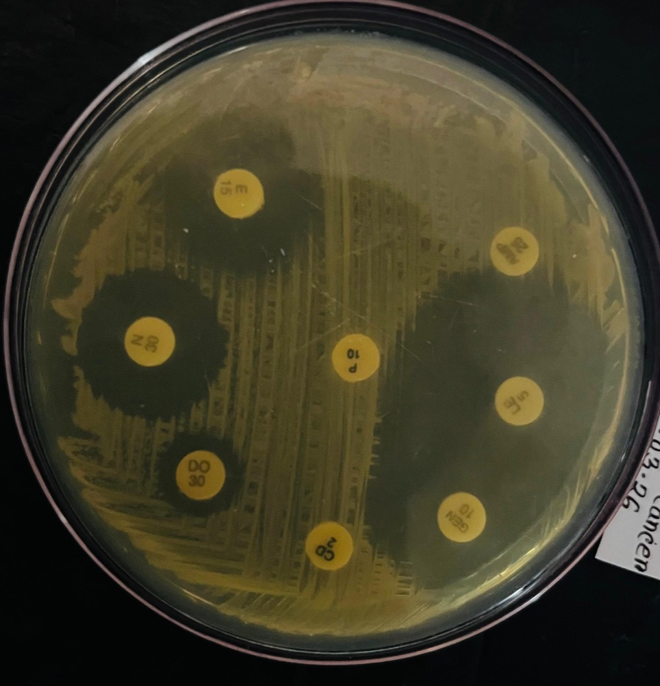
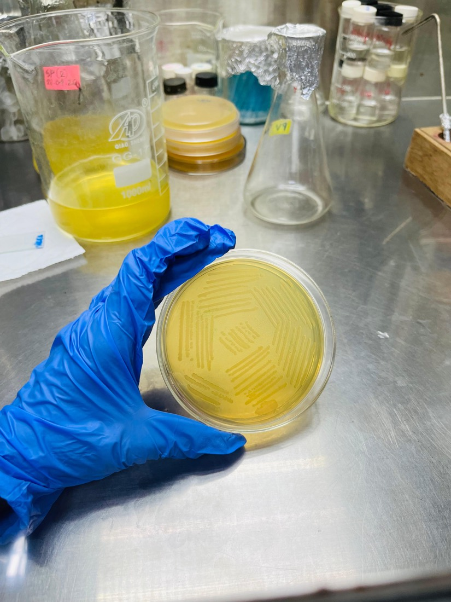
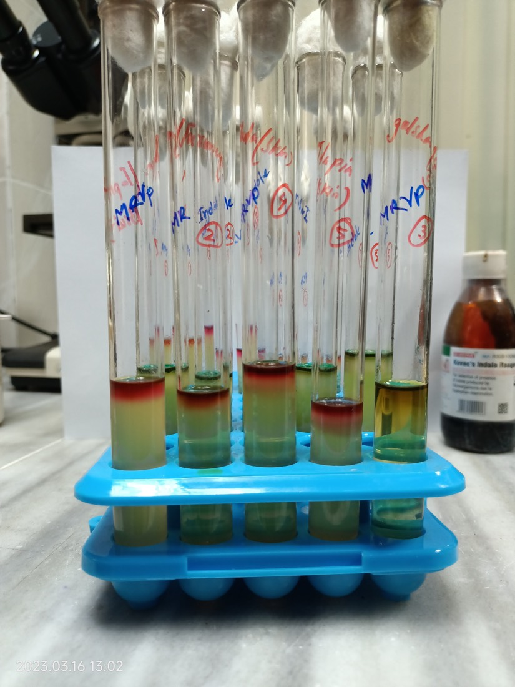
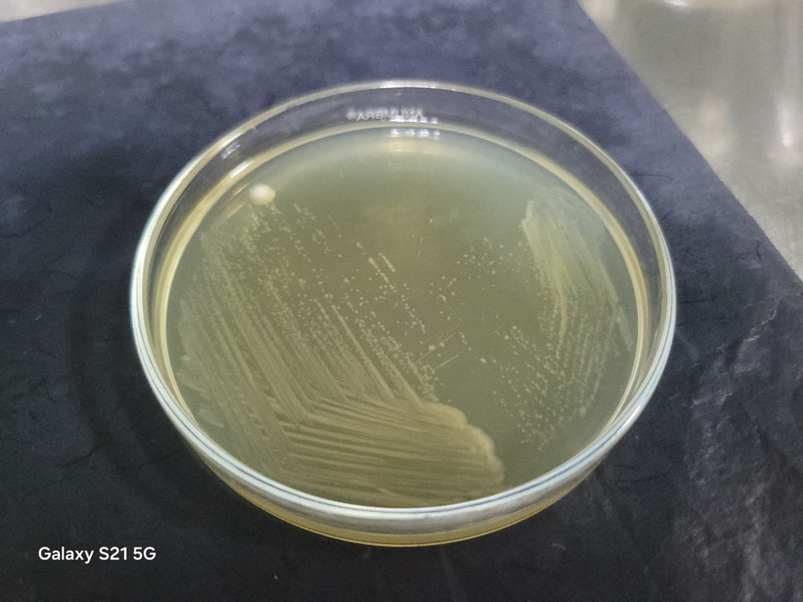
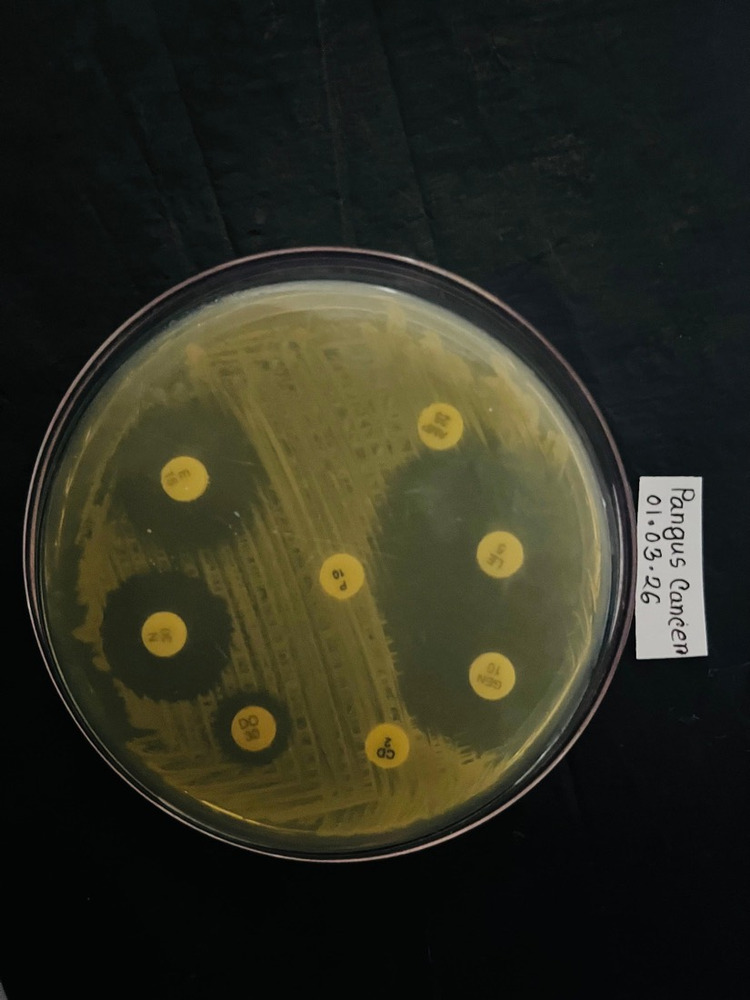

Investigation and Molecular Characterization of Diseases Affecting Cultured Carps in BangladeshBangladesh Fisheries Research Institute · Mymensingh-2201
Bangladesh Fisheries Research InstituteMymensingh-2201
Research Proposal
Investigation and Molecular Characterization of Diseases Affecting Cultured Carps in Bangladesh
Researcher(s)
Fish health · Microbiology · Molecular diagnostics
Why this study
Justification
01
High economic losses and threat to food security
Outbreaks can kill fish overnight, and carps feed millions.
02
Limitations of conventional diagnostic infrastructure
Visible signs and culture plates can't tell look-alike pathogens apart.
03
Mitigating AMR in aquatic ecosystems
Treating without a confirmed diagnosis breeds resistant bacteria.
04
Policy alignment and capacity building
Evidence that supports national AMR, fisheries and SDG goals.
Mass mortality on a pond bank

What we aim to do
Objectives
Obj. i
To investigate the clinical and pathological characteristics of diseases affecting cultured carps
Obj. ii
To isolate and identify the major pathogens associated with diseased carps
Obj. iii
To determine the molecular diversity and genetic characteristics of the identified pathogens
Obj. iv
To analyze the virulence-associated genes of major bacterial pathogens affecting cultured carps

Deliverables
Expected Output
01
Clinical and pathological profiles of major carp diseases
02
Isolation and identification of major carp pathogens
03
Molecular characterization, genetic diversity and virulence gene profiles of major bacterial pathogens
04
Baseline molecular database of carp pathogens in Bangladesh
05
Evidence-based strategies for disease diagnosis, surveillance and control
Activity 1
A comprehensive survey to assess farmers’ knowledge of diseases of carps
Activity 1
Survey of Farmers’ Knowledge of Carp Diseases
01
Selection of Study Area
Identify freshwater aquaculture regions and carp-farming communities.
02
Data Collection Sources
Primary data: farmers Secondary data: reports, booklets and internet materials.
03
Questionnaire Survey
Collect farmers’ knowledge and experiences of carp diseases.
04
Participatory Rural Appraisal
Use PRA tools to document community knowledge and disease concerns.
05
Data Management
Organize, check and compile the collected survey information.
06
Data Analysis
Analyze survey findings to assess farmers’ knowledge of carp diseases.
Activity 1 · Pictorial view of the survey methodology · Follow steps 1–6
Survey of Farmers’ Knowledge of Carp Diseases
1Selection of Study AreaSelect freshwater aquaculture regions2Primary & Secondary DataFarmers, reports and published sources3Questionnaire SurveyInterview carp farmers4Participatory Rural AppraisalCollect community-based insights5Data ManagementOrganize and validate survey records6Data AnalysisInterpret findings and patterns
Activity 2
Isolation and identification of the infectious pathogens in IMCs
Workflow lanes
Field & sampling
Culture & phenotype
Molecular analysis

Biochemical tests

Pure culture

Antibiotic susceptibility
Timeline · July 2026 – June 2027
Work Schedule (2026 - 2027)
YEAR2026-27
20262027
Project activities
JASONDJFMAMJ
1A cross-sectional study in selected freshwater aquaculture regions of Bangladesh
Jul – Mar
2Sampling of fish from disease affected farms and bacteria isolations
Jul – Mar
3Biochemical tests of the isolated pathogens
Nov – Apr
4PCR
Dec – Mar
5Data analysis & draft writing
May – Jun
THANK YOU
Questions & discussion are welcome
01 / 10
Use ←→, click, scroll or swipe · F full screen · D download